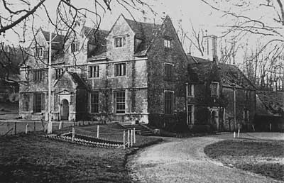
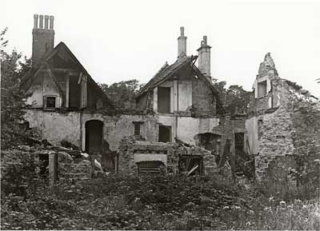
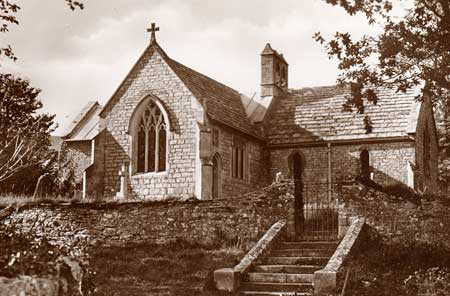

The Campaign to Return
The long fight to reclaim Tyneham
By James Langton · Updated May 2026

When the war ended in 1945, the people of Tyneham waited to go home. The promise had been clear: the requisition was temporary, the sacrifice was for the duration of the war, and when it was over the village would be returned. For the first few years after VE Day, that promise still seemed like something that could be kept.
It was not. What followed was more than two decades of petitions, public inquiries, parliamentary debate and organised campaigning — all of it ultimately unsuccessful. The story of the campaign to return Tyneham is the story of ordinary people discovering, slowly and painfully, that a government promise made in wartime carried very little legal weight in peacetime.
The Post-War Years
As early as 1945, local authorities and landowners began formally pressing the War Department to release the Tyneham lands. Dorset County Council raised the matter. MPs with constituencies in Purbeck brought it to parliament. The argument was straightforward: the war was over, the people had been promised they could return, and there was no justification for keeping them out.
The military's counter-argument was equally straightforward. The Lulworth Ranges provided a rare and valuable training ground — a large, sparsely populated area of varied terrain close to the coast, suitable for live firing exercises that could not safely be conducted elsewhere in southern England.
A public inquiry was held, but it found in favour of the military. The land would stay under Army control. For the families of Tyneham, many of whom had held on to the hope of return through the difficult post-war years, it was a serious blow — though not yet a final one.
The Tyneham Action Group

By the mid-1960s, Tyneham House itself had been left to deteriorate badly. The military had no use for the great house and no obligation to maintain it. When photographs of its state of ruin began to circulate, they prompted a new wave of public outrage. In December 1967, the editor of Dorset: The County Magazine called for organised action.
In May 1968, the Tyneham Action Group was formally established. Alongside it, a Public Trust Fund — known as the Friends of Tyneham — was set up to represent the interests of surviving former residents and their families. For the first time, the campaign to return the village had a public face and an organised voice.
The Action Group argued on several fronts simultaneously: the moral case (a promise had been broken), the heritage case (a village of historic significance was falling into ruin), and an emerging environmental argument that the Tyneham valley deserved public access, not continued military exclusion.
Philip Draper, one of the original residents and chairman of the campaign group, made the case with unusual precision. In filmed interviews he went beyond sentiment to argue the scientific value of what was being withheld: the valley contained one of the most important geological sequences on the south coast — thousands of feet of Earth's history visible in the tilted cliffs — and an Iron Age coastal hillfort on the ridge above that he ranked alongside Maiden Castle in historical importance. He also raised a practical argument the military found harder to dismiss: modern electronic simulators could replace live shells, at a fraction of the cost, removing the tactical justification for keeping the ranges at all.
The 1974 White Paper
The campaign reached its most critical moment in 1974. After years of pressure, the government agreed to review the military's continued use of the Lulworth Ranges. In August 1974, the government published its findings in a White Paper.
The conclusion was unambiguous. The Lulworth Ranges would remain under military control. The training requirement was genuine, alternative sites were not available, and the land could not be returned. The thirty-year campaign to keep Churchill's pledge had run into a wall of strategic necessity, and the wall had not moved.
For many of the original residents who were still alive in 1974, it was the moment they finally accepted that they would never go home.
Nor was the campaign simple or unified. When a 1973 government review recommended the release of all 7,200 acres of army land at Lulworth, campaigners were jubilant — but a significant number of local people were not. The area's economy had grown around the military presence, and a "Keep the Army In" committee formed to oppose the return. The argument that had always seemed straightforward — that a promise had been broken — turned out to have a more complicated underside. Many people who had not been displaced had come to depend on the ranges remaining closed.
John Gould, who had grown up in the Gardener's Cottage and returned from active WWII service to find his home requisitioned, had spent the following decades in correspondence with the War Office, letters to MPs, and a visit to 10 Downing Street at Harold Wilson's invitation — all without result. In 1975, now an old man, he walked past the military barriers into the village. To the journalists waiting there, he said: "I am coming home." The cottage he had grown up in no longer existed.

A Partial Victory: Public Access
The White Paper was not entirely without concession. The government agreed that the Lulworth Ranges would be opened to walkers and visitors on weekends and public holidays when military training was not taking place. This arrangement began in the mid-1970s and continues to this day.
St Mary's Church was carefully restored and opened as a small museum. The old school was preserved with its original fittings intact. Interpretation boards were installed throughout the village. It was not what the campaigners had fought for — but it meant that the story of Tyneham would be told.
Tyneham Today

The Lulworth Ranges remain active military training grounds. The MOD publishes an annual schedule of opening dates and the village draws around 100,000 visitors a year. Most come to see the ruined cottages, walk down to Worbarrow Bay, and read the note on the church door. The full story of the village — why it was evacuated and what visitors find there today — is told on the Dorset's Ghost Village page.
What has changed is the village's place in public memory. Tyneham is now one of the most visited sites in Dorset, a byword for wartime sacrifice and a broken promise. The women and children who pinned their note to the church door in December 1943 asked only that their village be treated with care. In its own complicated way, perhaps it finally has been.